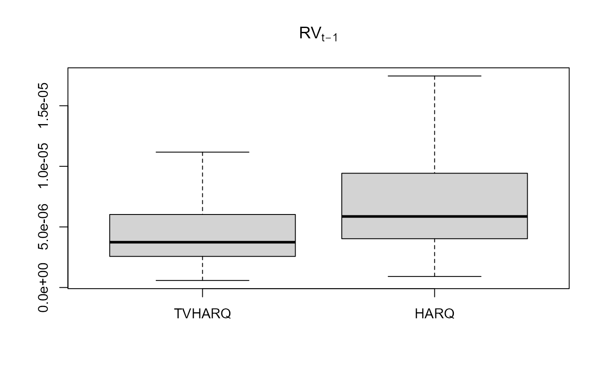

tvLM is used to fit a time-varying coefficients linear model
tvLM( formula, z = NULL, ez = NULL, data, bw = NULL, cv.block = 0, est = c("lc", "ll"), tkernel = c("Triweight", "Epa", "Gaussian"), singular.ok = TRUE )
| formula | An object of class formula. |
|---|---|
| z | A vector with the smoothing variable. |
| ez | (optional) A scalar or vector with the smoothing estimation values. If
values are included then the vector |
| data | An optional data frame or matrix. |
| bw | An opcional scalar. It represents the bandwidth in the estimation of trend coefficients. If NULL, it is selected by cross validation. |
| cv.block | A positive scalar with the size of the block in leave one block out cross-validation. By default 'cv.block=0' meaning leave one out cross-validation. |
| est | The nonparametric estimation method, one of "lc" (default) for linear constant or "ll" for local linear. |
| tkernel | A character, either "Triweight" (default), "Epa" or "Gaussian" kernel function. |
| singular.ok | Logical. If FALSE, a singular model is an error. |
An object of class tvlm
The object of class tvlm have the following components:
A matrix of dimensions
The fitted values.
Estimation residuals.
A matrix with the regressors data.
A vector with the dependent variable data.
A vector with the smoothing variable.
A vector with the smoothing estimation variable.
Bandwidth of mean estimation.
Nonparametric estimation methodology.
Kernel used in estimation.
Confidence interval range.
Number of bootstrap replications.
Type of bootstrap.
List with all bootstrap replications of coefficients, if done.
Models for tvLM are specified symbolically using the same formula
format than function lm. A typical model has the form response ~ terms
where response is the (numeric) response vector and terms is a series of terms which
specifies a linear predictor for response. A terms specification of the form
first + second indicates all the terms in first together with all the terms
in second with duplicates removed. A specification of the form first:second indicates
the set of terms obtained by taking the interactions of all terms in first with all
terms in second. The specification first*second indicates the cross of first and second.
This is the same as first + second + first:second.
A formula has an implied intercept term. To remove this use either y ~ x - 1 or y ~ 0 + x.
Bollerslev, T., Patton, A. J. and Quaedvlieg, R. (2016) Exploiting the errors: A simple approach for improved volatility forecasting. Journal of Econometrics, 192, 1-18.
Casas, I., Mao, X. and Veiga, H. (2018) Reexamining financial and economic predictability with new estimators of realized variance and variance risk premium. Url= http://pure.au.dk/portal/files/123066669/rp18_10.pdf
## Simulate a linear process with time-varying coefficient ## as functions of scaled time. set.seed(42) tau <- seq(1:200)/200 beta <- data.frame(beta1 = sin(2*pi*tau), beta2= 2*tau) X1 <- rnorm(200) X2 <- rchisq(200, df = 4) error <- rt(200, df = 10) y <- apply(cbind(X1, X2)*beta, 1, sum) + error data <- data.frame(y = y, X1 = X1, X2 = X2) ## Estimate coefficients with lm and tvLM for comparison coef.lm <- stats::lm(y ~ 0 + X1 + X2, data = data)$coef tvlm.fit <- tvLM(y ~ 0 + X1 + X2, data = data, bw = 0.29) ## Estimate coefficients of different realized variance models data("RV") RV2 <- head(RV, 2000) ##Bollerslev t al. (2016) HARQ model HARQ <- with(RV2, lm(RV ~ RV_lag + I(RV_lag * RQ_lag_sqrt) + RV_week + RV_month)) #Casas et al. (2018) TVHARQ model TVHARQ <- with(RV2, tvLM (RV ~ RV_lag + RV_week + RV_month, z = RQ_lag_sqrt, bw = 0.0061)) boxplot(data.frame(TVHARQ = TVHARQ$coefficients[,2] * RV2$RV_lag, HARQ = (HARQ$coef[2] + HARQ$coef[3] * RV2$RQ_lag_sqrt)*RV2$RV_lag), main = expression (RV[t-1]), outline = FALSE) 